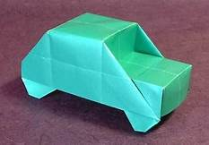
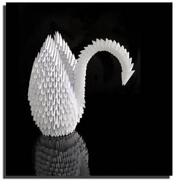

Kosho Uchiyama (Uchiyama Kōshō, 1912 – March 13, 1998) was a Sōtō priest, origami master, and abbot of Antai-ji near Kyoto, Japan. Uchiyama was author of more than twenty books on Zen Buddhism and origami, [1] of which Opening the Hand of Thought: Foundations of Zen Buddhist Practice is best known.
 